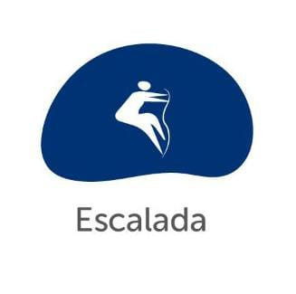
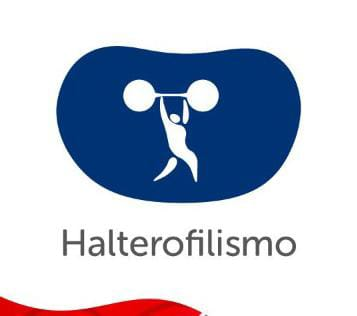
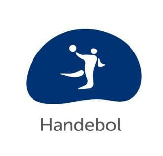

O que são as olímpiadas de verão? Quais são as modalidades jogadas nas Olímpiadas de verão?
Considerado o maior evento esportivo do planeta, os Jogos Olímpicos têm como objetivo estimular a competição sadia entre
os povos dos cinco continentes. Como já dizia o Barão de Coubertin (Pierre de Coubertin), considerado o fundador dos Jogos Olímpicos da Era Moderna, “o importante não
é vencer, mas competir. E com dignidade”. De acordo com a mitologia grega, o herói Hércules criou as Olimpíadas por volta de 2.500 a.C., na Grécia antiga, para
homenagear o pai dele, Zeus. Contudo, os primeiros registros históricos das Olimpíadas são de 776 a.C., quando os atletas vencedores começaram a ter seus nomes registrados.
Nessa época, os reis de Ilia, de Esparta e de Pissa aliaram-se para que, durante os jogos, houvesse trégua sagrada em toda a Grécia. A aliança foi realizada no templo de
Hera, localizado no santuário de Olímpia. Essa é a origem do termo “Olimpíadas”. Desde essa época, os Jogos Olímpicos passaram a ser realizados de quatro em quatro anos,
à exceção de 1914 e 1918 e 1939 e 1945, quando ocorreram a Primeira e Segunda Guerra Mundial, respectivamente.Atenas foi a cidade que sediou a primeira olimpíada da
Era Moderna, em abril de 1896, com delegações de 14 países. Desde essa época, os Jogos Olímpicos passaram a ser realizados de quatro em quatro anos, à exceção de 1914 e
1918 e 1939 e 1945, quando ocorreram a Primeira e Segunda Guerra Mundial, respectivamente. Jogos Olímpicos de Verão, conhecidos oficialmente como os Jogos Olímpicos, é
um evento multiesportivo realizado durante o verão.
Atletismo
Atletismo é o conjunto de esportes formado por três modalidades: corrida, lançamentos e saltos. Geralmente é praticado em estádios,
exceto a maratona, que é uma corrida de longa distância. As corridas são divididas em curta distância ou de velocidade; média
distância ou de meio fundo; e longa distância ou de fundo. O atletismo está nos Jogos Olímpicos desde seu início. É um dos esportes olímpicos
mais tradicionais. Ele tem várias categorias, como os 100m, 200m, revezamento 4x100m, entre outras.
Badminton
Já ouviu falar dessa modalidade? Badminton é um esporte dinâmico praticado entre dois ou quatro jogadores. Ainda que seja semelhante ao tênis,
que usa raquetes e está dividido por uma rede, ele possui suas peculiaridades. Ao invés de uma bola, ele é jogado com uma espécie de peteca,
chamada de volante ou birdie.O badminton estreou em Barcelona 1992.
Beisebol e Softbol
Basebol ou beisebol (do inglês baseball), é um desporto praticado por duas equipes de nove jogadores, que alternadamente ocupam as posições
de ataque e defesa. O objetivo é pontuar batendo com um bastão em uma bola lançada e depois correr pelas quatro bases do campo. O time com mais
corridas no final vence.
O softbol é um esporte que tem regras semelhantes às do beisebol. Todavia, é jogado em um campo menor e com uma bola maior e mais macia. Além disso,
o arremessador lança a bola sem erguer o braço acima do ombro. O softbol é praticado por homens e mulheres.
Basquete
O basquetebol, ou simplesmente basquete, é um esporte coletivo praticado entre duas equipes. Ele é jogado com uma bola, onde o objetivo é
inseri-la no cesto fixo que está localizado nas extremidades da quadra. Atualmente, o basquetebol é um dos jogos olímpicos mais populares no mundo.
Basquete 3x3
O 3×3 possui regras que o diferencia do basquete tradicional. São três jogadores em quadra ao invés de cinco, o jogo é disputado apenas em uma
metade de quadra e a primeira posse de bola é decidida no cara ou coroa. A pontuação também é diferente, cestas de dentro do perímetro valem um ponto e de fora, dois.
Boxe
Boxe ou pugilismo é um esporte de combate no qual os lutadores calçam luvas acolchoadas e utilizam as mãos para atacar e defender.
O objetivo no boxe é desferir golpes para pontuar ou nocautear o oponente, seguindo um conjunto de regras predeterminadas.
Canoagem Slalom
A bordo de uma canoa ou caiaque, a prática da Canoagem Slalom caracteriza-se como uma das modalidades mais radicais dos Jogos
Olímpicos na atualidade. ... O atleta, com auxílio do remo, desce corredeiras, passa por obstáculos naturais ou artificiais, com
o menor espaço de tempo, evitando sofrer penalidades.
Canoagem Velocidade
A canoagem velocidade, praticada com caiaques ou canoas, é uma modalidade essencialmente de competição. É praticada em rios ou
lagos de águas calmas com 9 raias demarcadas nas distâncias de 1.000, 500 e 200 metros. Iniciam-se com eliminatórias que classificam
os barcos semi-finalistas e finalistas.
Ciclismo BMX Corrida
O BMX, também conhecido como bicicross, é o caçula do ciclismo. A origem da modalidade data das décadas de 1960 e 1970, época
em que as vertentes mais tradicionais do esporte — estrada e pista — já faziam parte dos Jogos Olímpicos. O BMX surgiu graças à
admiração de jovens norte-americanos pelo MotoCross.
Ciclismo de Estrada
O ciclismo de estrada foi a primeira modalidade a ser disputada em cima de uma bicicleta. A competição ocorreu em 31 de maio de 1868, no
Parc de Saint-Cloud, em Paris. ... Com a popularidade em alta, o ciclismo de estrada fez parte do programa da primeira edição dos Jogos Olímpicos,
em Atenas-1896.
Ciclismo de Pista
É a mais tradicional competição do atletismo e envolve várias provas. – Corridas disputadas em pistas ovais (cada atleta corre numa faixa):
100 metros rasos, 200 metros rasos e 400 metros rasos. – Corridas de Meio Fundo (os atletas não precisam ficar na raia): 800 metros e 1.500 metros.
Ciclismo Mountain
O Free Style existe desde a década de 70 e foi inventado nos Estados Unidos. Suas primeiras manobras foram inventadas por pilotos
mundialmente famosos como Bob Haro, Ron Wilkerson e Michael Domingues. As crianças imitavam seus ídolos do motocross com suas bikes,
construíam pistas e faziam corridas informais.
Escalada

A escalada é um esporte que utiliza as técnicas e movimentos do montanhismo. Pode ser praticada tanto individualmente como em grupo e tem como
objetivo exigir o máximo de força e concentração. ... A escalada de bloco consiste em subir uma rocha ou um muro de treino, onde se privilegia mais
a força física de explosão.
Esgrima
A esgrima é um esporte de duelos, onde os atletas utilizam armas brancas classificadas como florete, espada e sabre para competir. Sua origem remonta
os tempos da Pré-História, quando o homem, pela primeira vez, empregou o uso de um pedaço de madeira para atacar e se defender dos inimigos.
Futebol
O futebol é um esporte cujo campo de grama apresenta 105 metros de comprimento por 68 metros de largura, uma padronização da Fifa. Duas equipes
compostas por 11 jogadores disputam uma partida em que o objetivo é marcar o máximo possível de gols.
Ginástica Artística
A ginástica artística, também conhecida no Brasil por ginástica olímpica, é uma modalidade de ginástica onde os atletas realizam um conjunto de
exercícios em aparelhos oficiais. Movimentos estes que revelam força, agilidade, flexibilidade, coordenação, equilíbrio e controle do corpo.
Ginástica de Trampolim
Trampolim acrobático ou Ginástica de trampolim é uma disciplina da ginástica, na qual o atleta executa saltos acrobáticos num trampolim. Enquanto
a modalidade efetivamente gímnica, foi criado em 1936 nos Estados Unidos pelo professor de educação física George Nissen, que formatou suas regras.
Ginástica Ritímica
Ginástica rítmica é um tipo de ginástica desenvolvida com movimentos corporais baseados nos elementos do balé e da dança teatral, numa mistura de arte,
criatividade e capacidade física, cuja execução é realizada em sincronia com a música.
Golfe
O golfe é um esporte criado na Escócia medieval, inspirado em um jogo romano chamado Paganica, em que os jogadores batiam em uma bola com um bastão ou taco.
O objetivo é colocar uma bola em uma série de buracos cavados no campo. O vencedor do jogo é aquele que acertar mais buracos com o menor número de tacadas.
Halterofilismo

O halterofilismo ou a halterofilia, levantamento de peso(s), ou ainda, levantamento de peso olímpico (LPO) é um desporto em que o atleta tenta levantar
o maior peso possível, do chão até sobre a cabeça, num haltere ou numa barra em que são fixados pesos, em competição ou como forma de exercício.
Handebol

O handebol ou o andebol (português europeu) é um esporte criado pelo alemão Karl Schelenz, em 1919. Essa modalidade esportista apresenta como aspecto o
jogo com as mãos e as partidas podem ser disputadas em quadras ou em campos de areia (handebol de praia).
Hipismo
Como esporte, o hipismo é uma competição em que vários cavaleiros apresentam suas habilidades em provas de perícia, velocidade e adestramento,
considerando harmonia, precisão e resistência dos competidores durante as provas, compostas de cercas de quase 2 m de altura, barreiras, muros
e fossos cheios de água.
Hóquei na Grama
Como esporte, o hipismo é uma competição em que vários cavaleiros apresentam suas habilidades em provas de perícia, velocidade e adestramento,
considerando harmonia, precisão e resistência dos competidores durante as provas, compostas de cercas de quase 2 m de altura, barreiras, muros
e fossos cheios de água.
Judô
Judô é uma arte marcial praticada como esporte. Criada por Jigoro Kano em 1882, o judô é uma adaptação do jiu-jitsu, que tem por objetivo desenvolver
técnicas de defesa pessoal, fortalecer o corpo, o físico e a mente de forma integrada. Foi considerado esporte oficial no Japão no final do século XIX.
Karatê
Caratê é uma arte marcial de autodefesa originaria do Japão. A palavra caratê significa “mão vazia”. É uma arte marcial que ensina golpes para a
autodefesa sem armas de qualquer espécie. Os principais objetivos são: o aperfeiçoamento do caráter, e a busca por maior eficácia de todo o corpo no momento da autodefesa.
Luta
A luta é um esporte em que dois atletas tentam derrubar um ao outro. Os lutadores precisam ter habilidade, força, rapidez e bom condicionamento físico.
A luta é um dos esportes mais antigos do mundo e já era praticada pelos antigos egípcios. Na Grécia antiga, a luta era parte importante dos Jogos Olímpicos.
Maratona Aquática
A maratona aquática é o evento de natação mais longo do programa Olímpico, cobrindo 10km de águas abertas. Durando cerca de duas horas, a prova testa a
resistência dos nadadores e é geralmente decidida em décimos de segundos
Nado Artístico
A natação artística (chamada de nado sincronizado até julho de 2017),[1] é um desporto híbrido que inclui conceitos da natação, da ginástica e da
dança, consistindo aos nadadores (indivíduos, duetos, trios, equipes ou combos) executar uma rotina sincronizada de movimentos elaborados e dramáticos
na água, acompanhada por uma música.
Natação
Natação é um exercício, arte ou esporte de nadar. É considerada um dos exercícios mais completos por movimentar grande parte dos músculos e articulações
do corpo. A natação é indicada com objetivos terapêuticos, no tratamento de problemas respiratórios e recuperação de atrofias musculares.
Pentatlo Moderno
Pentatlo moderno é um desporto olímpico praticado por homens e por mulheres, individualmente ou em equipes. Compõe-se de cinco modalidades diferentes:
hipismo, esgrima, natação, tiro esportivo e corrida. Por essa variedade de esportes, o vencedor do pentatlo é considerado o atleta mais completo.
Polo Aquático
O polo aquático é um esporte de confronto entre duas equipes. O objetivo é fazer o maior número de gols possível para a sua equipe. Esse esporte tem muita
semelhança com o handebol, uma vez que a bola é passada com as mãos e arremessada ao gol.
Remo
O remo é um esporte aquático de velocidade praticado em rios, lagos, pistas específicas para a modalidade ou no mar. Utiliza-se de barcos estreitos, onde os atletas
sentam sobre bancos móveis, de costas voltadas para a direção do movimento e remos, para movimentar o barco o mais rápido possível.
Rugby
Rugby, ou rúgbi, é um jogo em que uma bola oval é conduzida pelos pés ou pelas mãos dos jogadores até a linha de fundo do campo, onde há uma trave semelhante a um H.
Trata-se de um esporte que exige muita resistência, estratégia e habilidade dos seus jogadores.
Saltos Ornamentais
Salto Ornamental é um esporte individual que consiste em saltar de uma plataforma elevada, fixa ou não (trampolin), em direção a uma piscina,
realizando uma série de movimentos acrobáticos e estéticos. ... Provavelmente desde a antiguidade, saltar na água de lugares altos como penhascos
era uma forma de divertimento.
Skate
Skate é um esporte radical muito praticado atualmente. Consiste em, realizar manobras deslizando sobre o solo (com ou sem obstáculos) equilibrando-se
sobre o skate. O skate é uma prancha (shape) que possui dois eixos (trucks), rolamentos e quatro pequenas rodas.
Surfe
O surf é um desporto aquático que consiste em deslizar sobre as ondas do mar com uma prancha, efetuando, simultaneamente, diversas manobras com
diferentes graus de dificuldade. ... Os surfistas deitam-se na prancha e com os braços dão impulso para ganhar velocidade.
Taekwondo
O Taekwondo é uma arte marcial original da Coréia, onde surgiu a mais de 2000 anos. Na luta são válidos golpes de braço (socos) e de pernas (chutes).
Não é permitido agarrar o adversário. ... Os atletas são divididos em oito categorias (por peso) e a luta tem a duração de três rounds.
Tênis
Tênis é um esporte praticado entre dois oponentes ou duas duplas de oponentes em uma quadra dividida por uma rede, onde os jogadores usam raquetes para
rebater uma pequena bola de um lado para o outro. ... O jogo é iniciado com o saque de um dos jogadores.
Tênis de Mesa
O tênis de mesa, também conhecido como pingue-pongue, é o jogo em que duas pessoas ou duplas usam raquetes de madeira para passar uma bolinha de um
lado a outro de uma rede instalada em uma mesa. O nome pingue-pongue deve-se ao barulho que a bola faz ao bater na raquete e na mesa.
Tiro
O tiro esportivo é um esporte que requer precisão e velocidade em atirar com uma arma que pode ser tanto de fogo como de ar comprimido. A prática do
esporte requer treinamento e é necessário o uso de equipamentos como o óculos protetor.
Tiro com Arco
O tiro com arco (também chamado de arco e flecha) é um esporte em que os competidores atiram flechas com o auxílio de um arco, com o
objetivo de acertar um alvo. Por milhares de anos essa atividade foi usada na guerra e na caça. ... Séculos atrás, os guerreiros usavam arco e
flecha durante as batalhas.
Triatlo
O triatlo surgiu em San Diego, nos Estados Unidos, em 1974, em um clube de atletismo que, ao dar férias aos seus atletas, passava planilha de
treinamentos para que os atletas “descansassem” um pouco de treinos e competições. ... Esses atletas deveriam nadar 500 metros na piscina do clube,
pedalar 12km e correr 5km.
Vela
A vela, também conhecida por iatismo, é um esporte náutico praticado com barcos a vela movidos exclusivamente pela força do vento. Ao final de cada regata
são acumulados pontos de acordo com a posição de chegada do barco. ... Vence a competição aquele que, ao final, somar o menor número de pontos.
Vôlei
O voleibol ou vôlei é um esporte praticado entre duas equipes numa quadra retangular (aberta ou fechada). ... O voleibol é jogado com uma bola e inclui diversos
passes com as mãos. O objetivo principal é lançar a bola por cima da rede e fazê-la tocar no chão do adversário.
Vôlei de Praia
O vôlei ou voleibol de praia é um jogo disputado numa quadra de areia, dividida na metade por uma rede, por dois ou quatro jogadores. O objetivo é lançar a
bola com as mãos e fazer com que ela caia na quadra do adversário. A partida dura dois sets de 21 pontos.